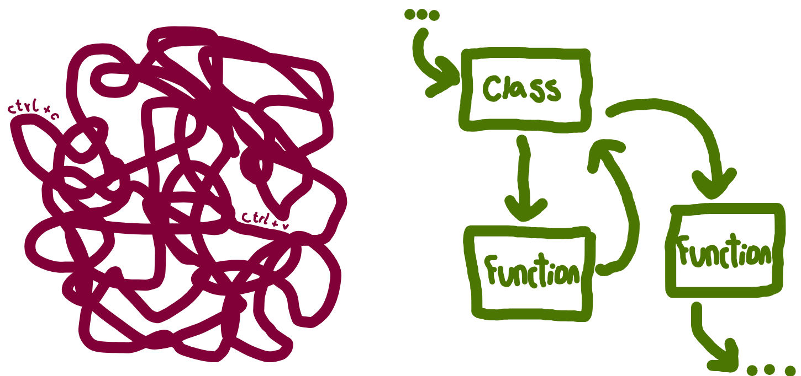

Code organisation
Choose your language:
🔗 Reproducibility guidelines:
- Heather et al. 2025: Minimise code duplication.
- NHS Levels of RAP (🥈): Reusable functions and/or classes are used where appropriate.
It might seem convenient to write all your code in a single script and simply copy-and-paste sections when you need to reuse something. However, this approach quickly becomes unmanageable as your project grows.
The main tools you can use to organise your code are functions and classes. These can then be stored in seperate files. Using these has has several benefits:
- Easier to read and collaborate on. Code is clearer and easier to understand for you and others.
- Simpler to maintain with fewer errors. Complex processes are broken into manageable parts. This makes them easier to update, test, and debug.
- No duplication. Writing reusable code (like functions and classes) means changes only need to be made in one place, such as when you are updating or fixing a bug. In contrast, duplicated code requires updates everywhere it appears, and you may miss some.

This page provides a basic introduction to functions, classes, and the associated programming paradigms.
Functions
Functions group code into reusable blocks that perform a specific task. You define inputs (parameters), a sequence of steps (the function body), and outputs (return values).
Functions are ideal when you want to reuse actions to perform an operation or calculation.
Example:
def add(a, b):
return a + badd <- function(a, b) {
a + b
}Classes
Classes bundle together data (“attributes”) and behaviour (“methods”). They become useful when you:
- Need to keep track of state. This means you want to remember information about an object over time. For example, if you have a
Patientclass, each patient object can keep track of its patient ID, patient type, etc. You can update or check these attributes whenever you want. - Have several related functions that operate on the same kind of data. Instead of writing separate functions that all work on the same data, you can put these inside a class as methods. This keeps your code organised and easier to use.
You first initialise the class with a special method called __init__. This methods runs when you create an object from the class. You pass parameters to it to set-up the initial attributes for that object.
You then have methods, which are like mini functions inside the class. They can access and change the class attributes, and can also accept additional inputs.
You create an instance of the class (called an “object”) to use it. Each attribute has its own copy of the attributes and can use the methods to work with its own data.
Example:
class Dog:
def __init__(self, name):
self.name = name
def bark(self):
print(f"{self.name} says woof!")
fido = Dog("Fido")
fido.bark() # Output: Fido says woof!Classes are less common in R, but are used sometimes for complex or structure tasks. R supports several class systems, including S3, S4 and R6. The R6 class is shown as an example below, and is the most similar to classes in Python.
Example:
library(R6)
Dog <- R6Class("Dog",
public = list(
name = NULL,
initialize = function(name) {
self$name <- name
},
bark = function() {
cat(self$name, "says woof!\n")
}
)
)
# Create an instance and use it:
fido <- Dog$new("Fido")
fido$bark() # Output: Fido says woof!Subclasses and inheritance
A subclass (or “child class”) is a class that inherits from another class (the “parent” or “superclass”). Subclasses can reuse or extend the behaviour of their parent.
Example:
class Animal:
def __init__(self, name, diet):
self.name = name
self.diet = diet
def describe(self):
return f"{self.name} is a {self.diet}"
class Cheetah(Animal):
def __init__(self, name):
super().__init__(name, diet="carnivore")
def activity(self):
base = self.describe()
return f"{base}. Sprinting at 70 mph!"
charlie = Cheetah("Charlie")
print(charlie.activity())
# Output: Charlie is a carnivore. Sprinting at 70 mph!library(R6)
Animal <- R6Class("Animal",
public = list(
name = NULL,
diet = NULL,
initialize = function(name, diet) {
self$name <- name
self$diet <- diet
},
describe = function() {
paste(self$name, "is a", self$diet)
},
)
)
Cheetah <- R6Class("Cheetah",
inherit = Animal,
public = list(
initialize = function(name) {
super$initialize(name, diet = "carnivore")
},
activity = function() {
base <- super$describe()
paste(base, "Sprinting at 70 mph!")
}
)
)
charlie <- Cheetah$new("Charlie")
cat(charlie$activity())
# Output: Charlie is a carnivore Sprinting at 70 mph!Programming paradigms
A programming paradigm is a general style or approach to organising and structuring code. The most common paradigms in Python and R are:
- Using functions - procedural programming; functional programming.
- Using classes - object-oriented programming (OOP).
This table provides a brief overview of the programming paradigms. This is just a quick overview - if you want to find out more, check out the resources linked in Further reading.
| Paradigm | Main object used | Key characteristics |
|---|---|---|
| Procedural programming | Functions | • Code runs step-by-step using functions, often passing data from one to the next • Data structures (like lists) are usually mutable (i.e. can be changed directly). • Use loops ( for, while) to repeat actions. |
| Functional programming | Functions | • Uses pure functions (always same output for same input, no side effects - i.e. doesn’t change variables elsewhere, only effect is to return value) • Functions are “first-class citizens” (i.e. can be assigned to variables, passed as arguments, or returned from functions).• Data structures are immutable (can’t be changed; new ones are created for each change). • Repeats actions with recursion (functions calling themselves) and higher-order functions (e.g. Python’s map, R’s sapply).•These features can help make your code more robust and easier to maintain than procedural programming. |
| Object-oriented programming (OOP) | Classes/Objects | • Orgnaises code into objects (instances of classes) that bundle data (attributes) and behaviour (methods). • Data and methods are bundled together (“encapsulation”). • Can hide details through private attributes and methods (“abstraction”). • A class can inherit from another class. • The same object can behave diferently depending on context (“polymorphism”). |
Normally, a mix of programming paradigms will be used.
In this book, you’ll see both functions and classes used, depending on what made sense for the task. Generally, we’ve used more classes in Python and more functions in R - as is typical, since R code often relies less on classes - but neither approach is exclusive, and often either could have been used. The choice is mostly a matter of language style, clarity, and what fits best for the problem at hand.
Further reading
- “Introduction to Programming Paradigms” by Samuel Shaibu (Datacamp, 2024).
- “OOP vs Functional vs Procedural” (Scaler Topics, 2022).